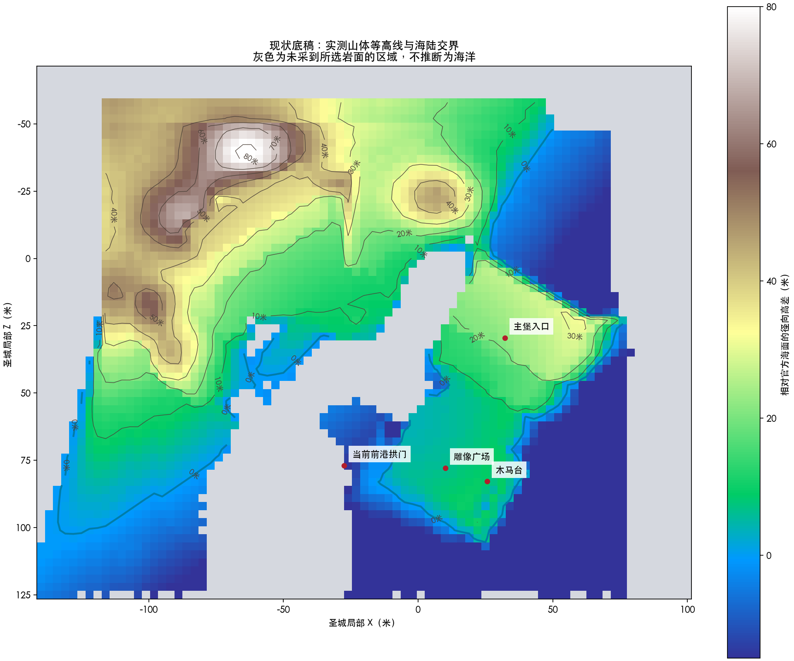
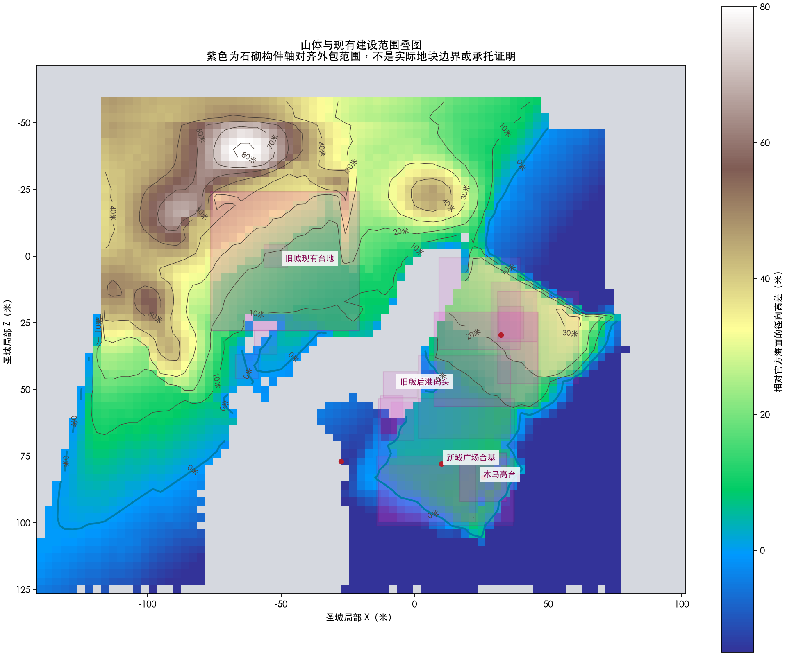
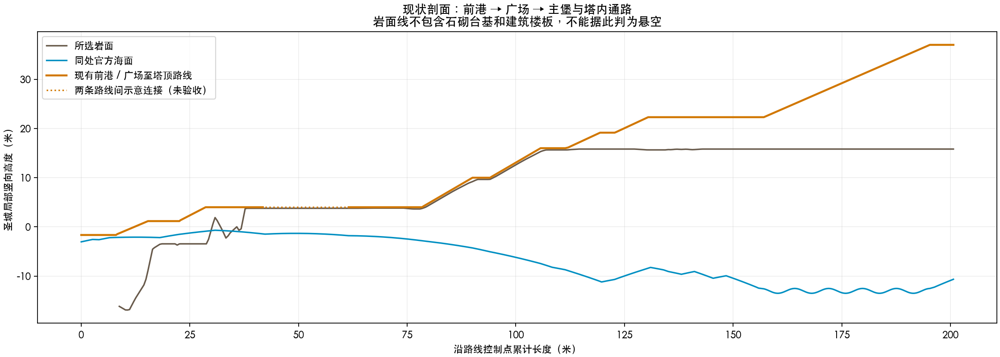

执行顺序：筑山 → 理水 → 置屋 → 绿植 → 布光 → 周边 → 人物。本页是当前原游戏的测量结果，尚不是完成后的山势设计，也不代表筑山阶段通过。
网格间距3米，等高线间隔10米。5,346个采样位置中，3,469个命中本次选取的岩面。灰色区域表示未采到这些岩面，不能解释为海洋或缺失地形；本轮已补入西侧峡壁、旧岸岩体与山坡基础；海床仍未纳入。

从实际场景清点2,122个可见网格，单列6类岩面对象与20个石砌支撑网格。紫色是构件外包范围，便于定位，并非精确地块或结构安全证明。

剖面区分岩面、统一海面与现有通路。高度采用城堡局部坐标，球面海洋在此坐标中的曲线不表示河水流向。图中未包含建筑楼板及台基，不能仅凭通路高于岩面判断悬空；虚线连接段尚未验证。

补齐承托地形清单，在同一底稿标定山脊、岸线与两城建设地块，再对照认可目标调整山势。前港拱门候选及上层岩台候选暂缓合入。